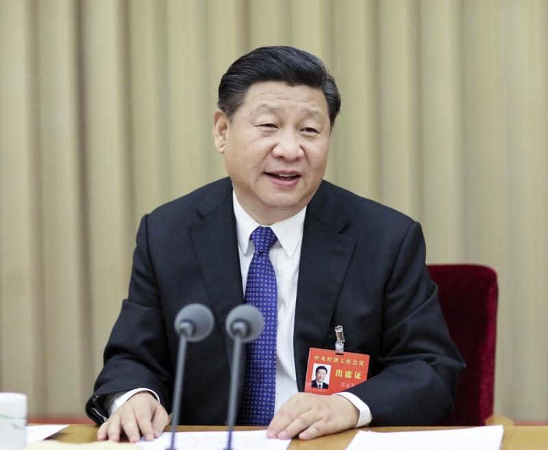
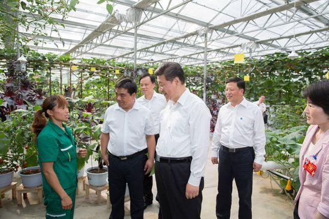
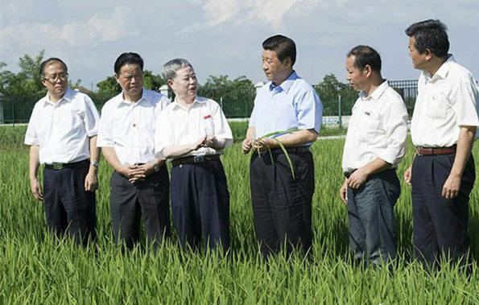
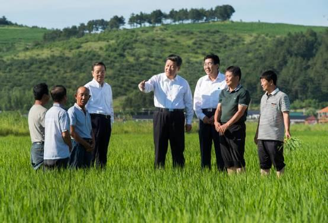

习近平的“三农梦”：让农业成为有奔头的产业
来源：中国农业网
添加时间：2016年09月14日
作为党的总书记、国家主席和军委主席，领导着世界上最大的发展中国家，习近平日理万机，如果有人问他，什么是他心中最重要的事情？他会毫不犹豫地说：“三农”！同时，他还把“三农”工作定位为治国安邦的重中之重、全党工作的重中之重。在刚刚落下帷幕的2015年中央农村工作会议上，习近平再次强调，任何时候都不能忽视和放松“三农”工作，“十三五”时期，必须坚持把解决好“三农”问题作为全党工作重中之重。发展农业、造福农村、富裕农民是他始终萦绕心头的“三农梦”。请随“学习中国”小编一起进入习近平的“三农梦”！
图为：2015年12月20日至21日，中央城市工作会议在北京举行。习近平发表重要讲话。
“农业梦”：让农业成为有奔头的产业
习近平指出：“现代高效农业是农民致富的好路子。要沿着这个路子走下去，让农业经营有效益，让农业成为有奔头的产业。”
“务农重本，国之大纲。”发展现代农业，让农业成为有奔头的产业，是习近平的“农业梦”。发展农业是解决“三农”问题的根本途径，也是加快社会主义现代化建设的重大任务。关于我国农业发展的方向，习近平指出：“农业的出路在现代化，农业现代化关键在科技进步。”
目前，我国工业化已进入中后期阶段，信息化日新月异，城镇化快速发展，而作为“四化同步”之一的农业仍处于传统农业向现代农业转型升级的初级阶段，农业现代化的步子远远落后于其他三化。习近平指出：“我们既要有工业化、信息化、城镇化，也要有农业现代化和新农村建设，两个方面要同步发展。”“十三五”期间，我们必须依靠科技支撑和创新驱动，努力走出一条产出高效、产品安全、资源节约、环境友好的现代农业发展道路，补齐农业现代化这个短板。
要加快农业发展，就必须加快农业科技进步。习近平指出：“要给农业插上科技的翅膀。”近些年，我国农业科技水平明显提高，2014年农业科技进步贡献率达到56%、农业耕种收综合机械化水平达到61%。
要加快农业发展，还必须进一步完善农业经营制度。习近平指出：“坚持党的农村政策，首要的就是坚持农村基本经营制度。要坚持农村土地农民集体所有，这是坚持农村基本经营制度的‘魂’。”坚持家庭经营基础性地位，农村集体土地应该由作为集体经济组织成员的农民家庭承包，其他任何主体都不能取代农民家庭的土地承包地位，不论承包经营权如何流转，集体土地承包权都属于农民家庭。坚持稳定土地承包关系，依法保障农民对承包地占有、使用、收益、流转及承包经营权抵押、担保权利。
为保证农业可持续发展，必须健全农业支持保护体系。习近平指出：“要加大农业投入力度，财政再困难也要优先保证农业支出，开支再压缩也不能减少‘三农’投入，要提高农业补贴的精准性和指向性。”
2015年7月16日，在秋粮生长的关键时期，习近平总书记来到吉林省延边州和龙市东城镇光东村，他沿着田埂步入稻田，察看水稻长势，同正在进行田间管理的村民和农技人员交流，叮嘱他们细化增产技术措施，争取秋粮丰收。习近平强调：“粮食安全是国家安全的重要基础。”国家要加大对粮食主产区的支持，增强粮食主产区发展经济和增加财政收入能力，实现粮食主产区粮食生产发展和经济实力增强有机统一、粮食增产和农民增收齐头并进。
图为：2015年6月16日下午，习近平在遵义县枫香镇花茂村的现代高效农业智能温控大棚，向正在劳动的村民了解增收致富情况。
“农村梦”：让农村成为农民幸福生活的美好家园
习近平要求大力推进新农村建设。他指出：“各地开展新农村建设，应坚持因地制宜、分类指导，规划先行、完善机制，突出重点、统筹协调，通过长期艰苦努力，全面改善农村生产生活条件。”对于浙江2003年以来在全省农村开展的“千村示范万村整治”工程的农村建设经验，习近平作出重要指示，强调要认真总结浙江省开展“千村示范万村整治”工程的经验并加以推广，并要注意因地制宜。
推进新农村建设，要不断改善农村的基本公共服务。2015年7月16日，当习近平总书记在吉林省延边州光东村了解到一些村民还在使用传统的旱厕，他当即指出：“随着农业现代化步伐加快，新农村建设也要不断推进，要来个‘厕所革命’，让农村群众用上卫生的厕所。基本公共服务要更多向农村倾斜，向老少边穷地区倾斜。
习近平指出：“当前，我国经济实力和综合国力显著增强，具备了支撑城乡发展一体化物质技术条件，到了工业反哺农业、城市支持农村的发展阶段。”顺应我国发展的新特征新要求，必须加强发挥制度优势，加强体制机制建设，把工业反哺农业、城市支持农村作为一项长期坚持的方针，坚持和完善实践证明行之有效的强农惠农富农政策，动员社会各方面力量加大对“三农”的支持力度，努力形成城乡发展一体化新格局。
“农民梦”：让农民过上幸福美满的日子
增加农民收入，让农民过上幸福美满的日子，就是习近平的“农民梦”，也是如期实现全面小康最艰巨的任务。
习近平的“农民梦”重点是提高农民收入，让农民早日过上小康生活。在全面建成小康社会的进程中，农民增收成为短板，习主席再三强调要补齐这个短板，要使从事农业的农民得到与城镇职工基本相当的收入。他要求各级政府要积极拓宽农民增收渠道，提高农业生产效益，促进家庭经营收入稳定增长，使经营农业有钱赚；引导农村劳动力转移就业，促进农民打工有钱赚；完善农业补贴政策，稳步推进农村改革，尽量增加农民的政策性收入和财产性收入。习近平指出：“党中央的政策好不好，要看乡亲们是笑还是哭。如果乡亲们笑，这就是好政策，要坚持；如果有人哭，说明政策还要完善和调整。”
习近平要求全面实施精准扶贫工程，尽快让农村贫困人口脱贫。要坚持专项扶贫、行业扶贫、社会扶贫等多方力量、多种举措有机结合、互为支撑，加大对贫困地区农民增收的支持力度，在扶持对象精准、项目安排精准、资金使用精准、措施到户精准、因村派人(第一书记)精准、脱贫成效精准上想办法、出实招、见真效，因地制宜研究实施扶贫攻坚行动计划，通过扶持生产和就业、移民搬迁、低保政策兜底、医疗救助等举措，确保实现农村贫困人口精准脱贫。
要积极推进农业人口城镇化，让农民生活得像市民一样幸福。习近平指出：“要加快推进户籍制度改革，完善城乡劳动者平等就业制度，逐步让农业转移人口在城镇进得来、住得下、融得进、能就业、可创业，维护好农民工合法权益，保障城乡劳动者平等就业权利。”他还强调：“推进城镇化首要任务是促进有能力在城镇稳定就业和生活的常住人口有序实现市民化。”
当前，城镇化存在的突出问题是要素城镇化超前、农民城镇化滞后。中国人民大学农业与农村发展学院副院长朱信凯曾撰文指出，在城镇化过程中，要注重城市对农村转移人口的包容和融合，在就业、教育、医疗、社保、住房等方面提供和城市居民平等的公共服务和权益。
农民是“三农”的根本，农民是主要劳动力，是发展农业、建设农村的主力军。农民的脱贫致富是三农问题中最重要环节，是发展农业、建设农村的基础。
 上一篇：北大荒金秋遍地是“黄金” 下一篇：前哨100%秸秆还田发展绿色农业